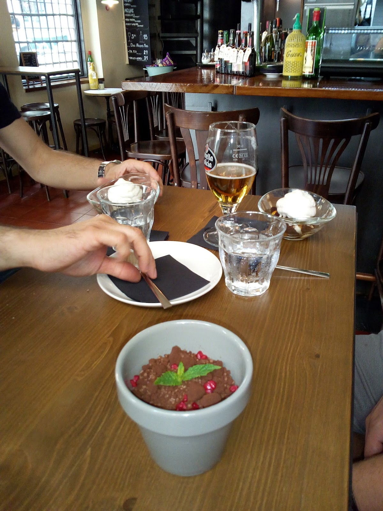

Una carta de platillos para picar y compartir, con producto de mercado y mucho mimo. Ideal para venir en grupo, pedir un poco de todo y descorchar un vino natural.A menu of small plates to nibble and share, with market produce and real care. Perfect to come as a group, order a bit of everything and open a natural wine.
Embutidos y quesos de primera, platillos que cambian con el mercado y un ambiente de barrio en pleno Poble-sec. 4,7 estrellas por hacer las cosas sencillas muy bien.Top cured meats and cheeses, plates that change with the market and a neighbourhood feel in the heart of Poble-sec. 4.7 stars for doing simple things really well.
